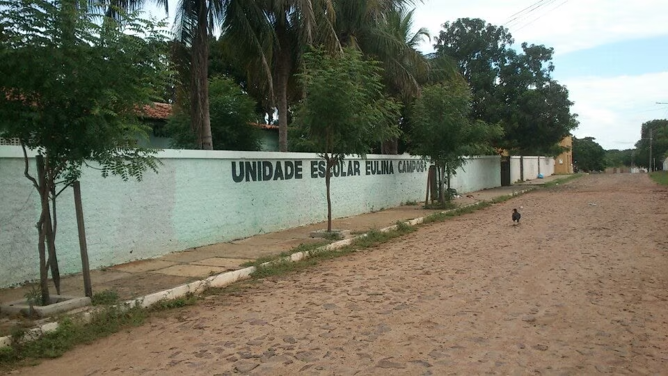

UNIDADE ESCOLAR EULINA CAMPOS

Fonte: Nicelocal
A Escola Eulina Campos, situada em um tranquilo bairro residencial, é um verdadeiro farol de conhecimento e desenvolvimento educacional. Fundada pela visionária educadora Eulina Campos, a instituição tem como missão proporcionar uma educação de qualidade, centrada no crescimento integral dos alunos.
Com uma infraestrutura moderna e acolhedora, a escola Eulina Campos busca não apenas transmitir conhecimentos acadêmicos, mas também cultivar valores como respeito, responsabilidade e empreendedorismo. Os espaços foram projetados para estimular a criatividade e a interação, criando um ambiente propício para o aprendizado e a descoberta.
Os educadores da Escola Eulina Campos são altamente qualificados e comprometidos, dedicando-se não apenas ao ensino tradicional, mas também à implementação de métodos inovadores. A tecnologia é integrada de maneira inteligente nas salas de aula, promovendo uma abordagem dinâmica e atualizada.
A escola conta com:
- Visão Educacional Abrangente;
- Infraestrutura Moderna e Acolhedora;
- Corpo Docente Altamente Qualificado;
- Ênfase em Atividades Extracurriculares;
- Compromisso com a Comunidade.